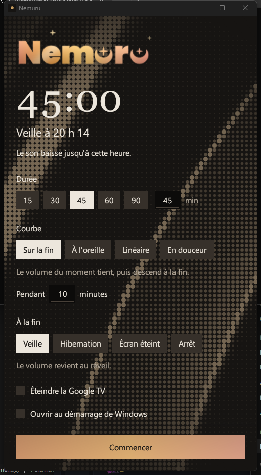
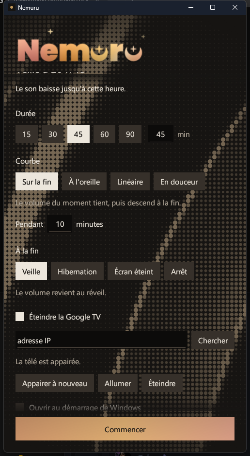

Veille
Le volume de départ revient au réveil.
Nemuru est une minuterie de coucher pour Windows. On choisit une durée, le volume descend tout doucement, puis le PC passe en veille. La Google TV s'éteint avec lui.
Version 1.4.0 · Windows 10 et 11, 64 bits · Gratuit, licence MIT

Nouveau dans 1.4.0
Pendant le compte, une lumière de fin de journée gagne les lettres de gauche à droite. Un liseré clair marque le front. Quand le logo est plein, l'heure est venue.
Au repos, il reste éclairé : ambre, or, pêche et rose glissent lentement, un reflet le traverse, les étoiles scintillent.
En trois gestes
15, 30, 45, 60 ou 90 minutes, ou n'importe quelle valeur jusqu'à 480. Sur un clavier AZERTY, la rangée du haut tape des chiffres même sans Maj.
Quatre courbes. Par défaut, le volume tient puis descend sur la fin.
La fenêtre se range près de l'horloge. Son icône montre le temps restant au survol et permet d'annuler.
Le volume
| Sur la fin | Le niveau du moment tient, puis descend pendant les dernières minutes. Réglage de départ. |
|---|---|
| À l'oreille | Une descente régulière pour l'oreille : linéaire en décibels, de 0 à −60 dB. |
| Linéaire | Le pourcentage descend d'un pas égal chaque minute. |
| En douceur | Lente au début, plus rapide au milieu, lente à la fin. |
Le curseur de volume de Windows reste libre pendant le compte. Si vous montez ou baissez le son, Nemuru reprend la descente à partir de ce nouveau niveau, en pourcentage.
À la fin
Le volume de départ revient au réveil.
Même chose, à la sortie d'hibernation.
Le son reste coupé jusqu'à « Rétablir le son ».
L'ordinateur s'éteint complètement.
Windows ne s'endort pas de lui-même pendant le compte.
Échap annule et remet le volume de départ.
Google TV
Chercher trouve les appareils Cast du réseau, une ligne par appareil. Appairer affiche un code QR : le téléphone ouvre une petite page servie par Nemuru sur le réseau de la maison et y saisit le code que la télé affiche.
Ce code ne passe jamais par Internet, ni par ce site. Une fois appairée, la télé reçoit la touche d'alimentation de la télécommande environ trente secondes avant la fin. Allumer la réveille.

Discret
Au lancement, Nemuru regarde la dernière version sur GitHub et s'installe tout seul quand aucun compte ne tourne.
Réglages, certificats et journal restent dans %APPDATA%\Nemuru.
Un seul exécutable en Rust, une seule instance à la fois, environ 10 % d'un cœur quand la fenêtre est visible.